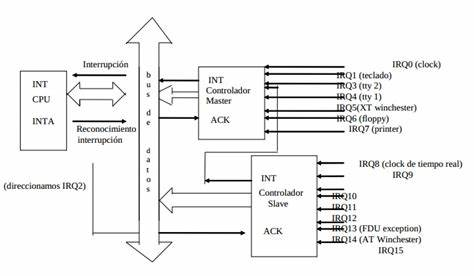

Una interrupción es una suspensión temporal de
la ejecución de un proceso, para pasar a ejecutar una subrutina de servicio
de interrupción, la cual, por lo general, no forma parte del programa, sino
que pertenece al sistema operativo o al BIOS. Una vez finalizada dicha subrutina,
se reanuda la ejecución del programa.
Las interrupciones son generadas por los dispositivos periféricos
habilitando una señal del CPU (llamada IRQ del inglés "interrupt request")
para solicitar atención del mismo. Por ejemplo. cuando un disco duro completa
una lectura solicita atención al igual que cada vez que se presiona una tecla
o se mueve el ratón.
La primera técnica que se empleó para esto
fue el polling, que consistía en que el propio procesador
se encargara de sondear los dispositivos periféricos cada
cierto tiempo para averiguar si tenía pendiente alguna
comunicación para él. Este método presentaba
el inconveniente de ser muy ineficiente, ya que el procesador
consumía constantemente tiempo y recursos en realizar estas
instrucciones de sondeo.
Funcionamiento del mecanismo de interrupciones
Todos los dispositivos que deseen comunicarse con el procesador por medio de
interrupciones deben tener asignada una línea única capaz de avisar al CPU cuando
le requiere para realizar una operación. Esta línea se denomina IRQ.
Las IRQ son líneas que llegan al controlador de interrupciones, un componente de
hardware dedicado a la gestión de las interrupciones, y que puede estar integrado
en el procesador principal o ser un circuito separado conectado al mismo. El controlador de
interrupciones debe ser capaz de habilitar o inhibir las líneas de interrupción
y establecer prioridades entre las mismas. Cuando varias líneas de petición de
interrupción se activan a la vez, el controlador de interrupciones utilizará
estas prioridades para escoger la interrupción sobre la que informará al
procesador principal. También puede darse el caso de que una rutina de tratamiento
de interrupción sea interrumpida para realizar otra rutina de tratamiento de
una interrupción de mayor prioridad a la que se estaba ejecutando; aunque hay
interrupciones que no se pueden deshabilitar (conocidas como interrupciones no enmascarables
o NMI).
Un procesador principal que no tenga un controlador de interrupciones integrado, suele
tener una única línea de interrupción llamada habitualmente INT. Esta
línea es activada por el controlador de interrupciones cuando tiene una interrupción
que servir. Al activarse esta línea, el procesador consulta los registros del controlador
de interrupciones para averiguar cual IRQ hay que atender. A partir del número del IRQ busca
en la tabla de vectores de interrupción la dirección de la rutina a la que debe
llamar para atender la petición del dispositivo asociado a dicha IRQ.
